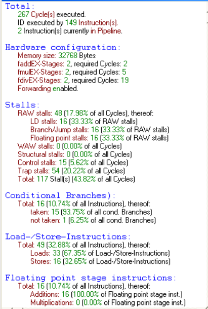
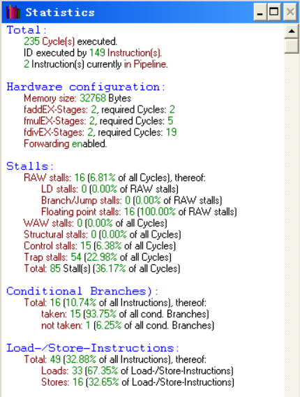
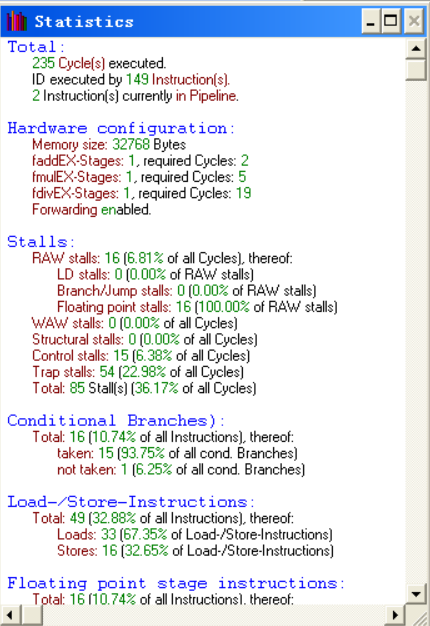
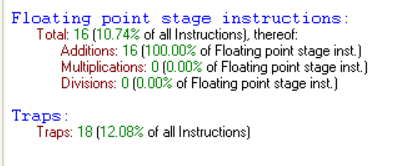
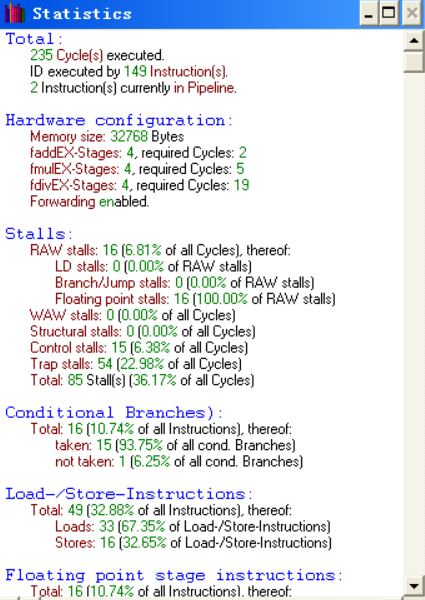
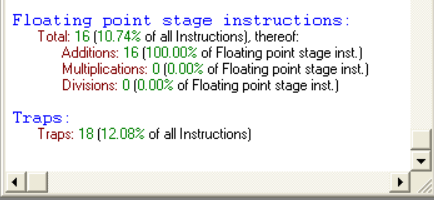
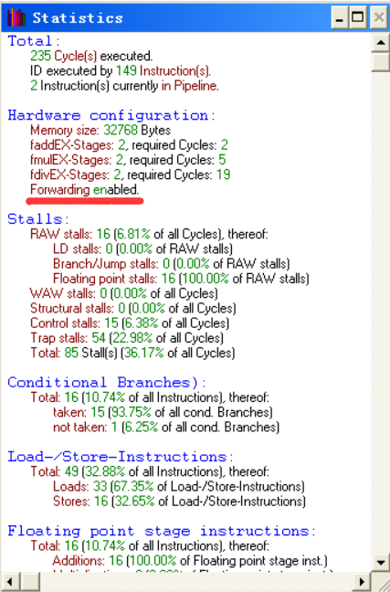
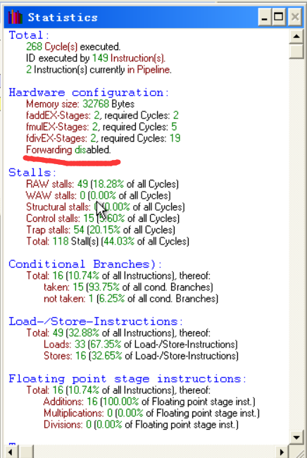
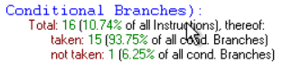

代码优化
实验目的
学习简单编译优化方法，观察采用编译优化方法所带来的性能的提高。
实验原理
采用静态调度方法重排指令序列，减少相关，优化程序。
实验步骤
用静态调度算法手工优化代码
选择上一个实验的两双精度浮点一维向量的加法运算代码作为优化对象，优化后的代码如下所示：
1 | .data |
分析已优化程序中出现的数据 / 控制 / 结构相关


优化后的程序的时钟周期从 267 个减少到了 235 个，RAW 相关也从 48 个大大减少到了 16 个，控制相关和结构相关的数量没有改变，由此可见本次所作代码优化对数据相关的改善最大。
考虑增加浮点运算部件对于性能的影响




同一段代码执行相同步，但是经过对比发现浮点运算部件的增减对于程序执行效率没有影响，可能是因为程序中不存在结构相关，所以并行度没有增加，系统性能没有提升。
考虑增加 forward 部件对性能的影响


使用 forward 组件后，执行的 cycles 比不适用 forward 组件要少，且产生的 RAW stalls 有明显减少，程序执行的效率提高了很多。在代码优化前，RAW 相关占 48 个 stalls，在优化后，RAW 现象大量减少，数据相关明显改善，提高了代码执行效率。
观察转移指令在转移成功和转移不成功时的流水线开销

本次实验中，转移成功的几率比较大。由于系统按照预测成功来执行指令，当判断转移不成功时，系统对 trap 指令进行的操作全部作废，转而去执行别的指令。这里代码优化对于转移指令没有影响。